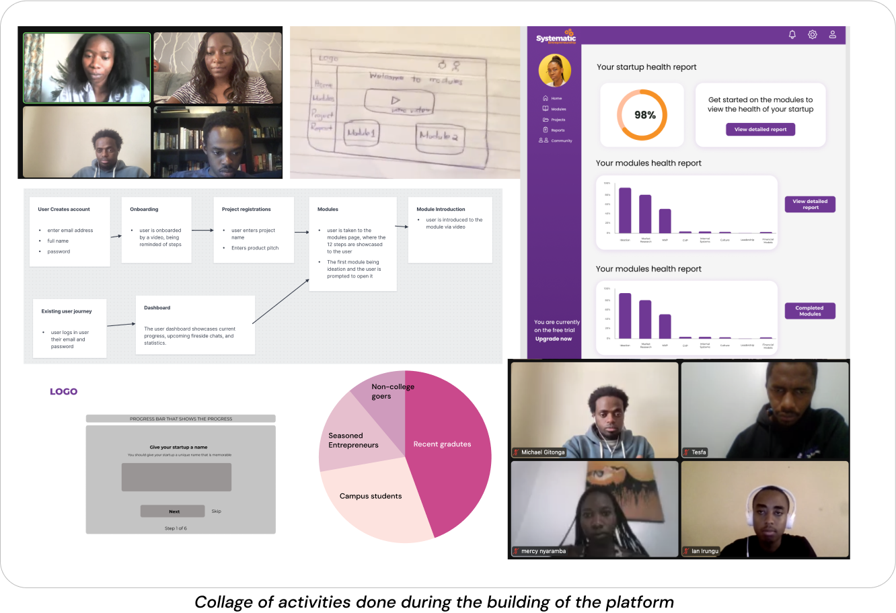
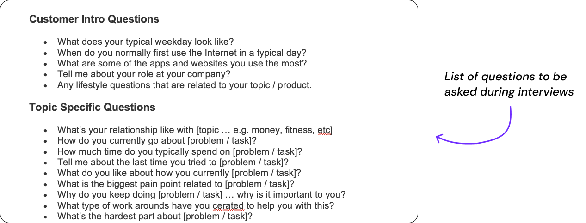
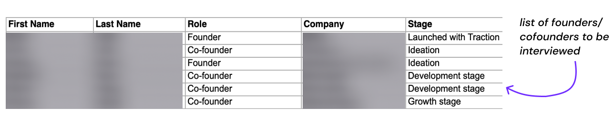
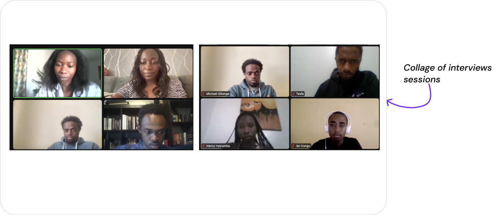
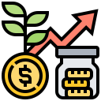

Market Research
In this stage, the whole team(marketers, developers and the product manager)
set out to understand the main challenges entrepreneurs were facing,
collecting the different needs they had.
Curating Interview and Survey Questions
We started the research process by identifying the main insights
and assumptions we wanted to validate from the market, which included the following:

The main challenges they experienced

The entrepreneurship process they followed

Where they got their entrepreneurship content from
We then curated questions we would ask in the field and in the surveys

Participants
After curating the questions, we then identified the people we would be contacting.
These would mainly consist of founders of small businesses in different stages of a
business.
Having founders at different stages would allow us to get unbiased feedback.
We built a list of 20 founders in the Kenyan ecosystem.

Interviews

We entered the next important phase; user interviews.
We divided our team of five to do the interviews of different
people in order to cover more ground.
The interviews were mainly primarily conduced virtually since they were
done during the pandemic.
These were some of the statistics from the interviews:
What were the main challenges faced by entrepreneurs?
The main challenges they experienced

Lack of mentorship from seasoned entrepreneurs

Where they got their entrepreneurship content from

Lack of accountability and keeping track of tasks
Ideas, ideas, ideas
After discovering the main needs the market had, we dived into the next phase, which was ideation. We brainstormed ideas for potential solutions.
The following questions guided our process:
- How might we provide them with the entrepreneurship knowledge they need at each stage?
- How might we link seasoned entrepreneurs to the novice ones for mentorship and guidance?
- How might we help them be more accountable in carrying out their tasks?
Outlook of proposed solution
After going through our different ideas, we voted on the top priorities which we saw should exist in the solution we builded. These were the pillars we decided to settle on:
The main challenges they experienced
The entrepreneurship process they followed
Where they got their entrepreneurship content from
After identifiying what areas we wanted to focus on, we then set out to create the solution for entrepreneurs. This was our solution statement:
A platform that provides entrepreneurs with a step by step process for developing your idea, along with community, mentors and content to help you stay on track